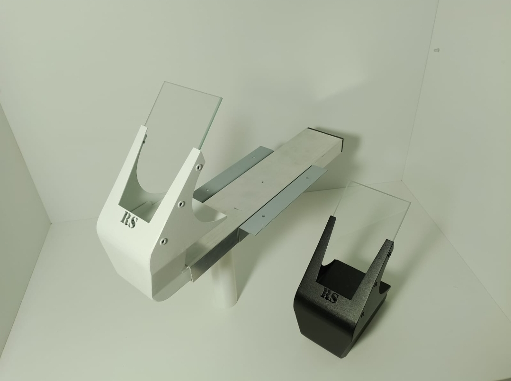
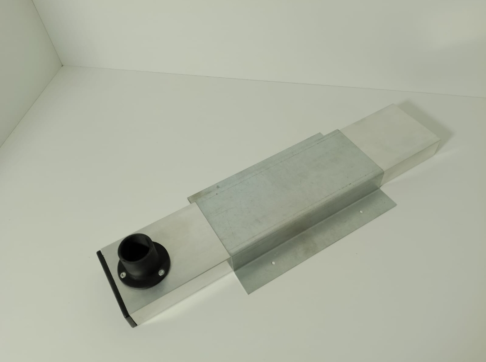

Nasza Oferta Urządzenia Protetyczne

Mebel Protetyczny 1
Opis: Kobyłka z szybką biała lub czarna. Na zamówienie dostępne są inne kolory
Cena netto: 380.00 PLN
×

Kanał Kobyłki
Opis: Kanał kobyłki jest kompatybilny z kobyłkami firmy Zubler czy Wassermann
Cena netto: 185 PLN
×